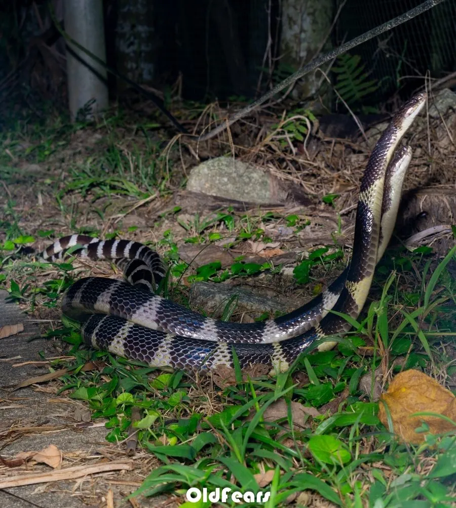

爬行动物 · 动物界
银环蛇 Bungarus multicinctus

中国南方常见的剧毒蛇，别名寸白蛇，黑白环纹相间，夜间活动，毒液以神经毒素为主，被咬后须立即就医。
- 分类
- 门脊索动物门纲爬行纲目有鳞目科眼镜蛇科属环蛇属
- 栖息环境
- 水田、溪流边、草丛、石缝与村落附近
- 地理分布
- 中国南方多省区及缅甸、越南、老挝等东南亚国家
- 保护级别
- IUCN 无危（LC）；中国国家二级保护动物
物种志
银环蛇体长 1–1.5 米，身体细长，头部椭圆，背面黑色并布满数十条白色或乳白色的窄环纹，环纹越靠近尾部越密，腹面白色；背脊中央的一行鳞片明显扩大呈六角形，是它的重要识别特征。它性情温和，白天多藏于洞穴、石缝和草丛，夜间出来活动。
它分布于中国南方以及缅甸、越南、老挝等东南亚国家，栖息于水田、溪边、草丛和村落附近，捕食鳝鱼、泥鳅、蛙类、鼠类和其他蛇类。每年 5–8 月繁殖，雌蛇产卵 5–15 枚，孵化期约 45–60 天。银环蛇毒性极强，毒液含神经毒素，被咬后伤口不痛不肿却可能迅速出现呼吸麻痹，必须立即就医；它已被列为国家二级保护动物，禁止非法捕捉和买卖。
形态与习性
- 食性鳝鱼、泥鳅、蛙类、鼠类和其他蛇类
- 体长1–1.5 m
- 体重约 0.5–1 kg
- 寿命约 10–15 年
- 繁殖卵生，每窝 5–15 枚，孵化 45–60 天
- 活动节律夜行性，白天藏于洞穴石缝
- 毒性神经毒素为主，被咬后须立即就医
趣味知识
- 银环蛇背脊中央的一行鳞片扩大呈六角形，是识别它的关键特征。
- 它的毒液以神经毒素为主，被咬后伤口往往不痛不肿，却可能迅速危及生命。
- 银环蛇已被列为国家二级保护动物，捕捉、买卖野生个体均属违法。